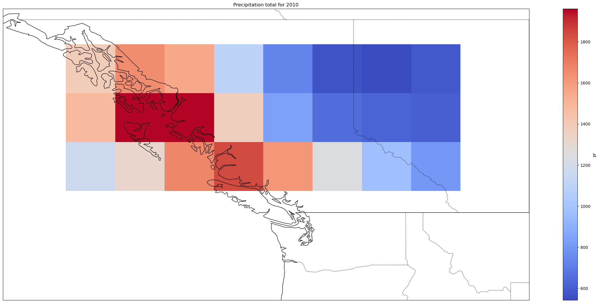
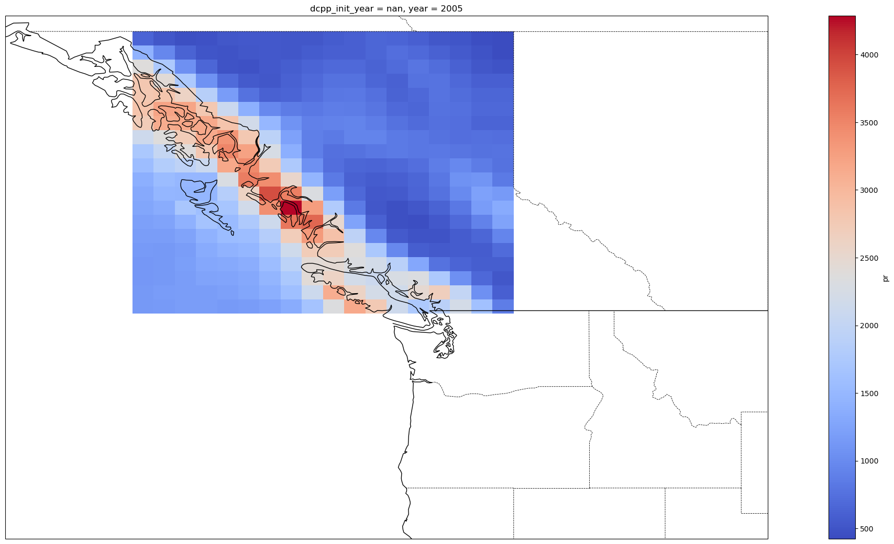
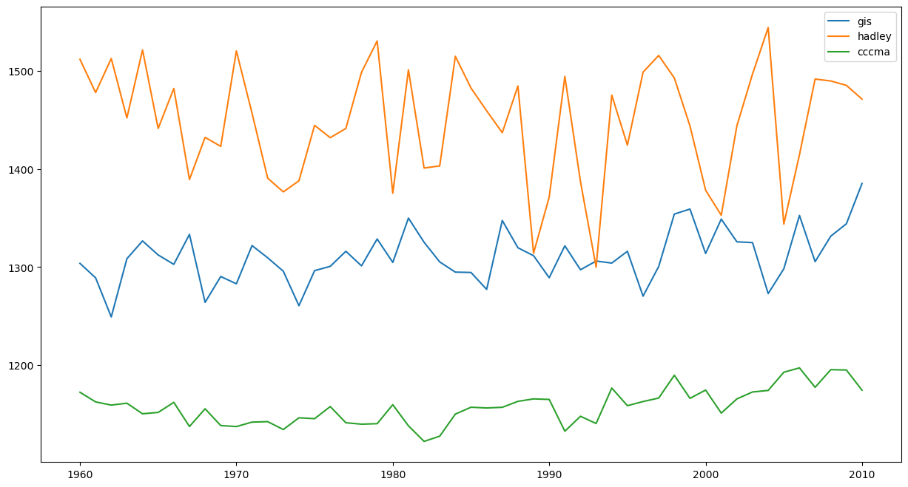

Loading the CMIP historical precip data#
CanESM5#
We want an approximate box of 115 to 135 lon and 49 to 60 lat, and we want a slice from 1960 to 2010
write = False
if write:
can_subset = col.search(table_id="Amon", variable_id = "pr", source_id = "CanESM5", experiment_id = 'historical')
dset_dict = can_subset.to_dataset_dict(zarr_kwargs={'consolidated':True})
can_dset = dset_dict['CMIP.CCCma.CanESM5.historical.Amon.gn']
can_bc_dset = can_dset.sel(lon = slice(225.,244.6875), lat = slice(48.835241, 59.99702), time = slice('1960', '2010'))
print("got here")
can_bc_dset.load().to_zarr("can_bc_dset.zarr")
bc_dset = xr.open_dataset('can_bc_dset.zarr')
mean_precip = bc_dset.groupby('time.year').mean('time').mean(['lon', 'lat'])*86400*365
plt.figure()
mean_precip.mean('member_id').pr.plot()
plt.title("Averaged Yearly precipitation for the CanESM5 GCM")
plt.xlabel('Year')
plt.ylabel('Precipitation total (mm)')
/Users/phil/mini310/envs/a405/lib/python3.11/site-packages/xarray/backends/plugins.py:159: RuntimeWarning: 'netcdf4' fails while guessing
warnings.warn(f"{engine!r} fails while guessing", RuntimeWarning)
/Users/phil/mini310/envs/a405/lib/python3.11/site-packages/xarray/backends/plugins.py:159: RuntimeWarning: 'scipy' fails while guessing
warnings.warn(f"{engine!r} fails while guessing", RuntimeWarning)
Text(0, 0.5, 'Precipitation total (mm)')
var_precip = bc_dset.groupby('time.year').mean('time').mean(['lon', 'lat'])*86400*365
var_precip.std('member_id').pr.plot()
plt.title("Standard deviation of precipitation for the CanESM5 members")
plt.xlabel('Year')
plt.ylabel('Precipitation total (mm)')
Text(0, 0.5, 'Precipitation total (mm)')
hist_data = bc_dset.groupby('time.year').mean('time').mean(['lon', 'lat'])*86400*365
hist_data = hist_data.sel(year=2010)
hist_data.pr.plot.hist()
plt.title("2010 Precipitation Average distribution across the CanESM5 members")
plt.xlabel('Precipitation total (mm)')
plt.ylabel('Number')
Text(0, 0.5, 'Number')
## Try plotting on a map for 2010
data2010 = bc_dset.sel(time='2010')
precip_data2010 = data2010.groupby('time.year').mean('time')*86400*365
precip_data2010 = precip_data2010.mean('member_id')
fig = plt.figure(1, figsize=[30,13])
ax = plt.subplot(1, 1, 1, projection=ccrs.PlateCarree())
ax.coastlines()
ax.add_feature(cartopy.feature.BORDERS, linestyle='-', alpha=1)
ax.set_extent([-140, -110, 44, 60])
resol = '50m'
provinc_bodr = cartopy.feature.NaturalEarthFeature(category='cultural',
name='admin_1_states_provinces_lines', scale=resol, facecolor='none', edgecolor='k')
ax.add_feature(provinc_bodr, linestyle='--', linewidth=0.6, edgecolor="k", zorder=10)
precip_data2010.pr.plot(ax=ax,cmap='coolwarm')
ax.title.set_text("Precipitation total for 2010")

HadGEM3#
hadGEM = False
if hadGEM:
had_subset = col.search(table_id="Amon", variable_id = "pr", source_id = "HadGEM3-GC31-MM", experiment_id = 'historical')
dset_dict = had_subset.to_dataset_dict(zarr_kwargs={'consolidated':True})
had_dset = dset_dict['CMIP.MOHC.HadGEM3-GC31-MM.historical.Amon.gn']
had_bc_dset = had_dset.sel(lon = slice(225.4, 239.6), lat = slice(48.835241, 59.99702), time = slice('1960', '2010'))
had_bc_dset.load().to_zarr('had_bc_dset.zarr')
print('done')
had_bc_dset = xr.open_dataset('had_bc_dset.zarr')
mean_precip_had = had_bc_dset.groupby('time.year').mean('time').mean(['lon', 'lat'])*86400*365
plt.figure()
mean_precip_had.mean('member_id').pr.plot()
plt.title("Averaged Yearly precipitation for the HadGEM3 GCM")
plt.xlabel('Year')
plt.ylabel('Precipitation total (mm)')
/Users/phil/mini310/envs/a405/lib/python3.11/site-packages/xarray/backends/plugins.py:159: RuntimeWarning: 'netcdf4' fails while guessing
warnings.warn(f"{engine!r} fails while guessing", RuntimeWarning)
/Users/phil/mini310/envs/a405/lib/python3.11/site-packages/xarray/backends/plugins.py:159: RuntimeWarning: 'scipy' fails while guessing
warnings.warn(f"{engine!r} fails while guessing", RuntimeWarning)
Text(0, 0.5, 'Precipitation total (mm)')
had_std_precip = had_bc_dset.groupby('time.year').mean('time').mean(['lon', 'lat'])*86400*365
had_std_precip.std('member_id').pr.plot()
plt.title("Standard deviation of precipitation for the HadGEM members")
plt.xlabel('Year')
plt.ylabel('Precipitation total (mm)')
Text(0, 0.5, 'Precipitation total (mm)')
had_hist_data = had_bc_dset.groupby('time.year').mean('time').mean(['lon', 'lat'])*86400*365
had_hist_data = had_hist_data.sel(year=2010)
had_hist_data.pr.plot.hist()
plt.title("2010 Precipitation Average distribution across the HadGEM members")
plt.xlabel('Precipitation total (mm)')
plt.ylabel('Number')
Text(0, 0.5, 'Number')
had_data2010 = had_bc_dset.sel(time='2005')
had_precip_data2010 = had_data2010.groupby('time.year').mean('time')*86400*365
had_precip_data2010 = had_precip_data2010.mean('member_id')
fig = plt.figure(1, figsize=[30,13])
ax2 = plt.subplot(1, 1, 1, projection=ccrs.PlateCarree())
ax2.coastlines()
ax2.add_feature(cartopy.feature.BORDERS, linestyle='-', alpha=1)
ax2.set_extent([-140, -110, 40, 60])
resol = '50m'
provinc_bodr = cartopy.feature.NaturalEarthFeature(category='cultural',
name='admin_1_states_provinces_lines', scale=resol, facecolor='none', edgecolor='k')
ax2.add_feature(provinc_bodr, linestyle='--', linewidth=0.6, edgecolor="k", zorder=10)
had_precip_data2010.pr.plot(ax=ax2,cmap='coolwarm')
ax.title.set_text("Precipitation total for 2010")

GISS#
GISS = False
if GISS:
gis_subset = col.search(table_id="Amon", variable_id = "pr", source_id = "GISS-E2-1-H", experiment_id = 'historical')
dset_dict = gis_subset.to_dataset_dict(zarr_kwargs={'consolidated':True})
gis_dset = dset_dict['CMIP.NASA-GISS.GISS-E2-1-H.historical.Amon.gn']
gis_bc_dset = gis_dset.sel(lon = slice(226.25, 238.75), lat = slice(48.835241, 59.99702), time = slice('1960', '2010'))
gis_bc_dset.load().to_zarr('gis_bc_dset.zarr')
gis_bc_dset = xr.open_dataset('gis_bc_dset.zarr')
mean_precip_gis = gis_bc_dset.groupby('time.year').mean('time').mean(['lon', 'lat'])*86400*365
plt.figure()
mean_precip_gis.mean('member_id').pr.plot()
plt.title("Averaged Yearly precipitation for the GISS GCM")
plt.xlabel('Year')
plt.ylabel('Precipitation total (mm)')
/Users/phil/mini310/envs/a405/lib/python3.11/site-packages/xarray/backends/plugins.py:159: RuntimeWarning: 'netcdf4' fails while guessing
warnings.warn(f"{engine!r} fails while guessing", RuntimeWarning)
/Users/phil/mini310/envs/a405/lib/python3.11/site-packages/xarray/backends/plugins.py:159: RuntimeWarning: 'scipy' fails while guessing
warnings.warn(f"{engine!r} fails while guessing", RuntimeWarning)
Text(0, 0.5, 'Precipitation total (mm)')
gis_std_precip = gis_bc_dset.groupby('time.year').mean('time').mean(['lon', 'lat'])*86400*365
gis_std_precip.std('member_id').pr.plot()
plt.title("Standard deviation of precipitation for the HadGEM members")
plt.xlabel('Year')
plt.ylabel('Precipitation total (mm)')
Text(0, 0.5, 'Precipitation total (mm)')
gis_hist_data = gis_bc_dset.groupby('time.year').mean('time').mean(['lon', 'lat'])*86400*365
gis_hist_data = gis_hist_data.sel(year=2010)
gis_hist_data.pr.plot.hist()
plt.title("2010 Precipitation Average distribution across the GISS members")
plt.xlabel('Precipitation total (mm)')
plt.ylabel('Number')
Text(0, 0.5, 'Number')
gis_data1990 = gis_bc_dset.sel(time='2010')
gis_precip_data1990 = gis_data1990.groupby('time.year').mean('time')*86400*365
gis_precip_data1990 = gis_precip_data1990.mean('member_id')
fig = plt.figure(1, figsize=[30,13])
ax = plt.subplot(1, 1, 1, projection=ccrs.PlateCarree())
ax.coastlines()
ax.add_feature(cartopy.feature.BORDERS, linestyle='-', alpha=1)
ax.set_extent([-140, -110, 40, 60])
resol = '50m'
provinc_bodr = cartopy.feature.NaturalEarthFeature(category='cultural',
name='admin_1_states_provinces_lines', scale=resol, facecolor='none', edgecolor='k')
ax.add_feature(provinc_bodr, linestyle='--', linewidth=0.6, edgecolor="k", zorder=10)
gis_precip_data1990.pr.plot(ax=ax,cmap='coolwarm')
<cartopy.mpl.geocollection.GeoQuadMesh at 0x1544a6150>
Creating plots with all 3 models#
time = mean_precip_gis.year
fig, axs = plt.subplots(1, 1, figsize=(15, 8))
axs.plot(time,mean_precip_gis.mean('member_id').pr,label='gis')
axs.plot(time, mean_precip_had.mean('member_id').pr,label='hadley')
axs.plot(time, mean_precip.mean('member_id').pr,label='cccma')
axs.legend();
